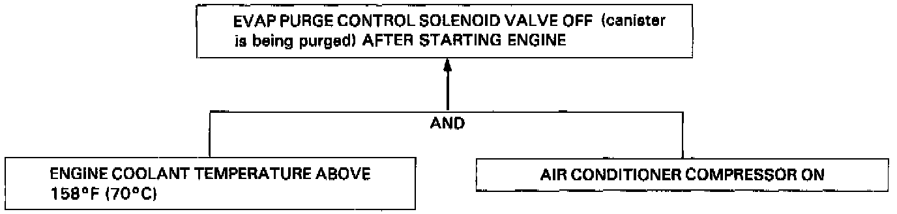

Evaporative Emissions System: Description and Operation
DESCRIPTIONThe evaporative emission controls are designed to minimize the amount of fuel vapor escaping to the atmosphere. The system consists of the following components:
A. Evaporative Emission (EVAP) Control Canister
An EVAP control canister is used for the temporary storage of fuel vapor until the fuel vapor can be purged from the EVAP control canister into the engine and burned.
B. Vapor Purge Control System
EVAP control canister purging is accomplished by drawing fresh air through the EVAP control canister and into a port on the throttle body. The purging vacuum is controlled by the EVAP purge control diaphragm valve and the EVAP control solenoid valve.

C. Fuel Tank Vapor Control System
When fuel vapor pressure in the fuel tank is higher than the set value of the EVAP two way valve, the valve opens and regulates the flow of fuel vapor to the EVAP control canister.